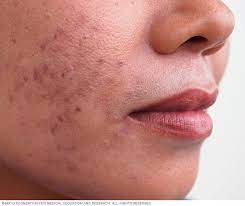

Skin diseases are conditions that affect your skin. These diseases may cause rashes, inflammation, itchiness or other skin changes. Some skin conditions may be genetic, while lifestyle factors may cause others. Skin disease treatment may include medications, creams or ointments,or lifestyle changes.
Skin disorders vary greatly in symptoms and severity. They can be temporary or permanent, and may be painless or painful. Some have situational causes, while others may be genetic. Some skin conditions are minor, and others can be life-threatening.
Skin diseases include all conditions that clog, irritate or inflame your skin. Often, skin diseases cause rashes or other changes in your skin’s appearance.
Types of Skin Diseases
- Acne: blocked skin follicles that lead to oil, bacteria and dead skin buildup in your pores.
- Alopecia areata: losing your hair in small patches.
- Atopic dermatitis (eczema): dry, itchy skin that leads to swelling, cracking or scaliness.
- Psoriasis: scaly skin that may swell or feel hot.
- Raynaud’s phenomenon: periodic reduced blood flow to your fingers, toes or other body parts, causing numbness or skin color change.
- Rosacea: flushed thick skin and pimples, usually on the face.
- Skin cancer: uncontrolled growth of abnormal skin cells.
- Vitiligo: patches of skin that lose pigment.
symptoms of skin diseases
Skin disease symptoms vary significantly, depending on what condition you have. Skin changes are not always due to skin diseases. For example, you may get a blister from wearing ill-fitting shoes. However, when skin changes show up with no known cause, they may be linked to an underlying condition.
skin diseases may cause:
- Discolored skin patches (abnormal pigmentation).
- Dry skin.
- Open sores, lesions or ulcers.
- Peeling skin.
- Rashes, possibly with itchiness or pain.
- Red, white or pus-filled bumps.
- Scaly or rough skin.
Preventing skin disorders
Certain skin disorders aren’t preventable, including genetic conditions and some skin problems due to other illnesses. However, it’s possible to prevent some skin disorders.
Follow these tips to prevent infectious skin disorders:
- Wash your hands with soap and warm water frequently.
- Avoid sharing eating utensils and drinking glasses with other people.
- Avoid direct contact with the skin of other people who have an infection.
- Clean things in public spaces, such as gym equipment, before using them.
- Don’t share personal items, such as blankets, hairbrushes, or swimsuits.
- Sleep for at least seven hours each night.
- Drink plenty of water.
- Avoid excessive physical or emotional stress.
- Eat a nutritious diet.
- Get vaccinated for infectious skin conditions, such as chickenpox
we need consult Dermatologists
Dermatologists are medical doctors who specialize in diagnosing and treating diseases of the skin, hair, nails and mucus membrane. Some dermatologists are also surgeons.
Medicines
Depending on the condition, a dermatologist (doctor specializing in skin) or other healthcare provider may recommend:
- Antibiotics.
- Antihistamines.
- Laser skin resurfacing.
- Medicated creams, ointments or gels.
- Moisturizers.
- Oral medications (taken by mouth).
- Steroid pills, creams or injections.
- Surgical procedures.
previous
next